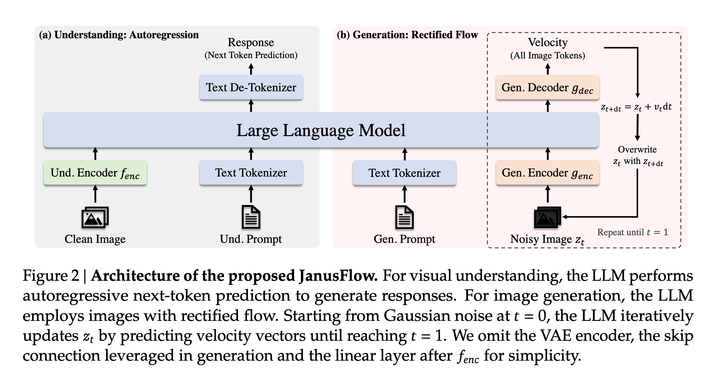
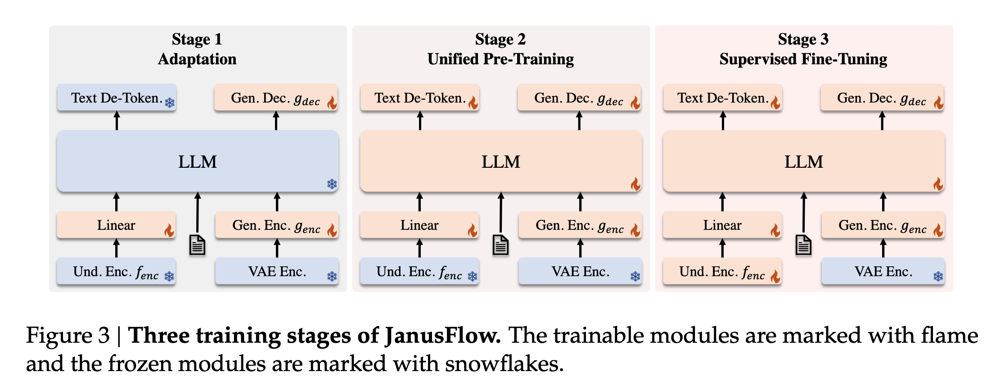
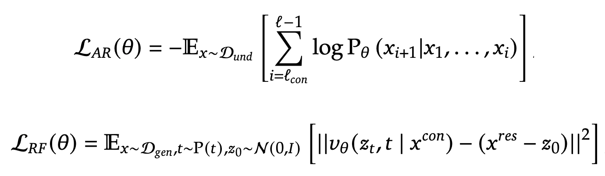
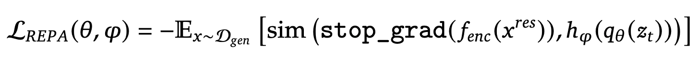
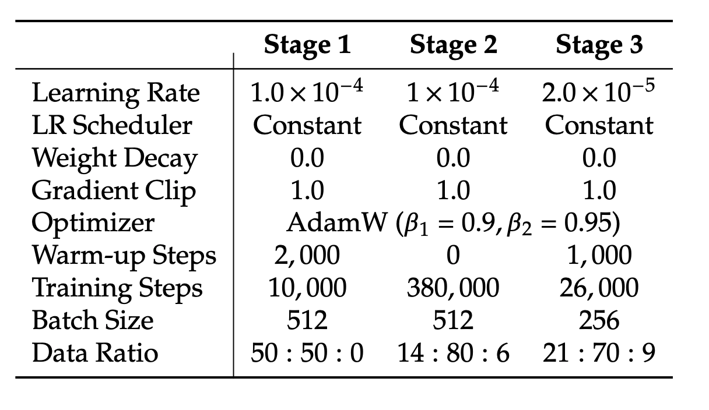
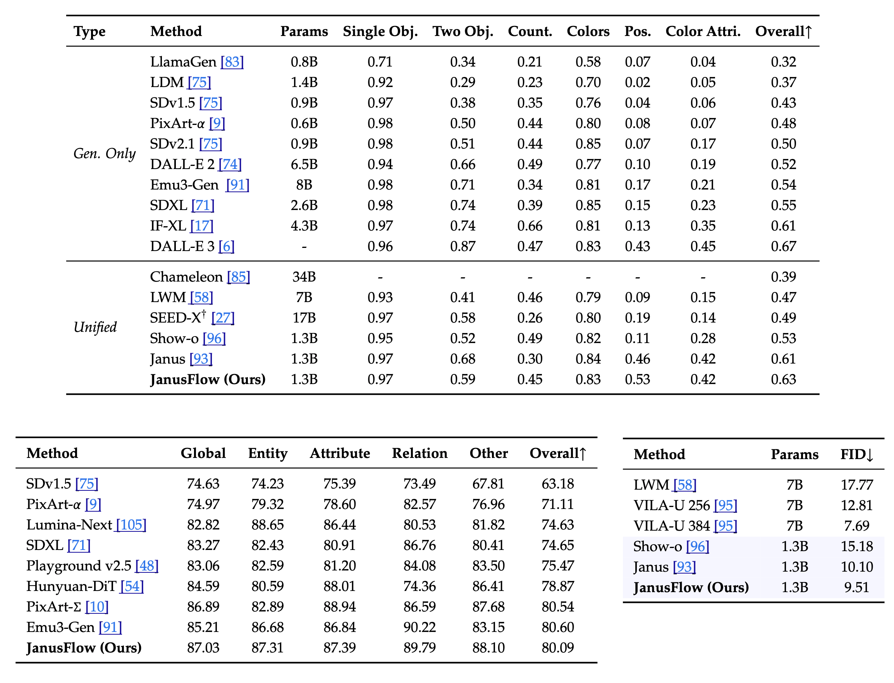

JanusFlow
Harmonizing Autoregression and Rectified Flow for Unified Multimodal Understanding and Generation
We all have been impressed by the quality of models produced by Deepseek. I thought Qwen was good, but the main highlight is JanusFlow. Apart from the MM1 paper from Apple, I believe JanusFlow is one of the best papers on modern MLLMs. It combines both image understanding and image generation in a single model. The JanusFlow paper is crisp and to the point.
MultiModal Understanding
In multimodal understanding tasks, the LLM processes an input sequence consisting of interleaved text and image data.
- Text is tokenized into discrete tokens. Each token is transformed into an embedding of dimension 𝐷𝑒𝑚𝑏.
- An image encoder f_enc encodes images into feature maps of shape 𝐻𝑖𝑚 × 𝑊𝑖𝑚 × 𝐷𝑒𝑛𝑐. The authors use a pre-trained SigLIP-Large-Patch/16 model as the image encoder (fenc).
- The image feature map is flattened and projected through a linear transformation layer into a sequence of embeddings with shape (𝐻𝑖𝑚 𝑊𝑖𝑚) × 𝐷𝑒𝑚𝑏.
- The text and image embeddings are concatenated to form the input sequence to the LLM. Special tokens |BOI| and |EOI| are inserted before and after the image tokens to help the model locate the image embeddings in the sequence.
- Based on the above sequence of input embeddings, the LLM predicts the next token autoregressively.

Image Generation
The same LLM used for multimodal understanding employs rectified flow for image generation.
- Generation occurs in the latent space using a pre-trained SDXL-VAE.
- The LLM takes a text sequence 𝑥𝑐𝑜𝑛 as a condition and generates a corresponding image using rectified flow.
- Start by sampling Gaussian noise z0 of shape 𝐻𝑙𝑎𝑡𝑒𝑛𝑡 × 𝑊𝑙𝑎𝑡𝑒𝑛𝑡 × 𝐷𝑙𝑎𝑡𝑒𝑛𝑡 in the latent space.
- A generation encoder genc transforms the above image(noise in the beginning) into a sequence of embeddings (H𝑔𝑒𝑛 W𝑔𝑒𝑛) × 𝐷𝑒𝑚𝑏. The authors use ConvNext blocks initialized from scratch in the generation encoder here.
- The above sequence is then concatenated with a time embedding representing the current time step 𝑡 (𝑡 = 0 at the beginning), resulting in a sequence of length (𝐻𝑔𝑒𝑛 𝑊𝑔𝑒𝑛 + 1). Special token |BOI| is prepended to indicate the start of image generation in the sequence.
- The LLM predicts the next token autoregressively. The output is then transformed to a velocity vector of shape 𝐻𝑙𝑎𝑡𝑒𝑛𝑡 × 𝑊𝑙𝑎𝑡𝑒𝑛𝑡 × 𝐷𝑙𝑎𝑡𝑒𝑛𝑡 by a generation decoder gdec. The authors use ConvNext blocks initialized from scratch in the generation decoder.
- The transformed output state is then updated by a standard Euler solver: 𝑧𝑡+d𝑡 = 𝑧𝑡 + 𝑣(𝑧𝑡, 𝑡)d𝑡. The step size dt is defined by the user.
- Use zdt as the input, replacing z0 in the above steps iteratively till we obtain z1.
- To improve the image generation quality, the authors use the good old classifier-free guidance (CFG). 𝑤 ⩾ 1 controls the magnitude of CFG, and increasing 𝑤 yields higher semantic alignment.
Pay attention to the details here. Not only do the authors employ separate image encoders for understanding and generation, but they also use different kinds of models, SigLIP for understanding and ConvNext for generation.
Training Schemes
The authors adopt a three-stage sequential training:
- Adaptation: Randomly initialized components such as the linear layers, generation encoder, and generation decoder are trained in this stage.
- Unified pre-training: Once the adaptation phase is complete, the authors train the entire model except for the visual encoder. The training incorporates three data types; multimodal understanding, image generation, and text-only data. At the start, the data mixture contains more multimodal understanding data, and the authors then increase the ratio of image generation data gradually.
- Supervised Fine-tuning (SFT): At this stage, the SigLIP image encoder is also unfrozen. The model is fine-tuned using instruction-tuning data, which comprises dialogues, task-specific conversations, and high-quality text-conditioned image generation examples.
This training scheme reminds me of the old transfer learning followed by the layer-wise fine-tuning paradigm widely used in the peak CNN era of 2014-18.

The first two stages use three types of data: multimodal understanding data, image generation data, and text-only data. The multimodal understanding data contains image-caption pairs, charts and tables, and task data (ShareGPT4V). The image generation data comes from different sources like LAION-Aesthetics, SAM, etc., and 2 million in-house samples. All samples go through a filtration process to ensure only high quality. For text-only data, the authors use the text corpus of DeepSeek-LLM. Similarly, the SFT uses three types of data: Multimodal instruction data, image generation data, and text-only data.
Training Objective
Training JanusFlow involves two types of data, multimodal understanding data and image generation data. Both types of data contain two parts: “condition” and “response”. The data is formatted in pairs as 𝑥 = (𝑥𝑐𝑜𝑛, 𝑥𝑟𝑒𝑠), where the superscript 𝑐𝑜𝑛 denotes “condition” and 𝑟𝑒𝑠 denotes “response”. The sequence length of x is denoted by L, while the sequence lengths of xcon and xres are denoted by Lcon and Lres respectively. 𝜃 denotes all the trainable parameters.
- Autoregression Objective: For multimodal understanding tasks, 𝑥𝑟𝑒𝑠 contains only text tokens, and the model is trained using the maximum likelihood principle where the loss is calculated over tokens in xres.
- Rectified Flow Objective: For image generation tasks, 𝑥𝑐𝑜𝑛 consists of text tokens and 𝑥𝑟𝑒𝑠 is the corresponding image, and the model is trained with the rectified flow objective. 10% of the text prompt is dropped during training to enable CFG.

- Representation Alignment Regularization: For generation tasks, features from the understanding encoder 𝑓𝑒𝑛𝑐 are aligned with the intermediate features of the LLM as shown below. The function
sim(...)computes the mean of element-wise cosine similarity between embeddings. This alignment loss helps the LLM’s internal feature space (given noisy input 𝑧𝑡) align with the understanding encoder’s semantic feature space, thereby improving generation quality when producing images from new random noise and text conditions during inference.

All three objectives are applied across all training stages. Multimodal understanding tasks use L𝐴𝑅, while image generation tasks employ the combined loss L𝑅𝐹 + L𝑅𝐸𝑃𝐴.
Hparams used in training
Here is the list of all the hparams used in the training at different stages:

Results
Here are the results for both image generation and multimodal understanding tasks. The one big complaint I have in these evaluations is the use of FID. I think it is high time to ditch the FID. It is meaningless most of the time.
